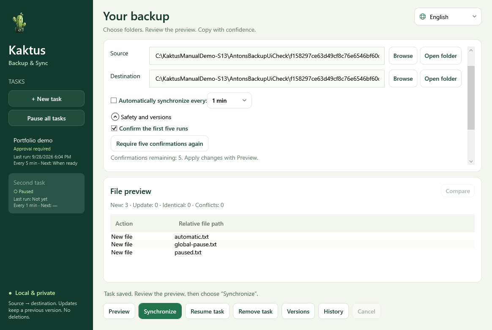

Windows · x64
Kaktus Backup & Sync
One-way folder backup with a preview and preserved previous file versions.
Preview · 5.2.0-preview.7Before you startPortable package includes .NET; Python and an SDK are not needed. This is a preview release.


How it works
- Select a source
- Review the preview
- Create a one-way backup
First steps
Extract the entire ZIP and open KaktusBackupSync.exe. Choose source and target, then review the plan before syncing.